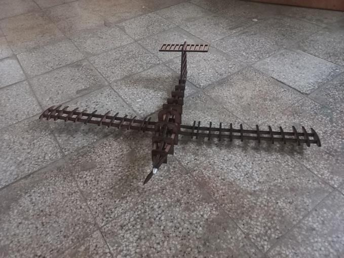
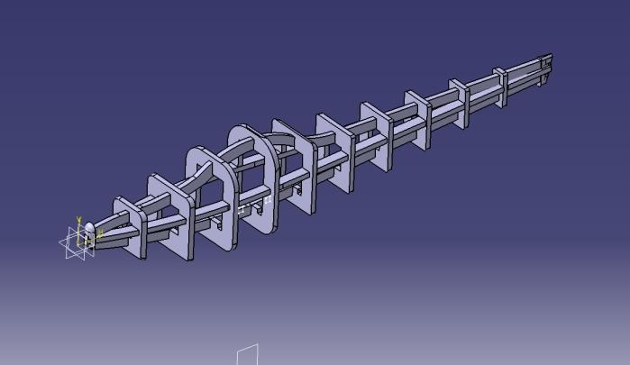
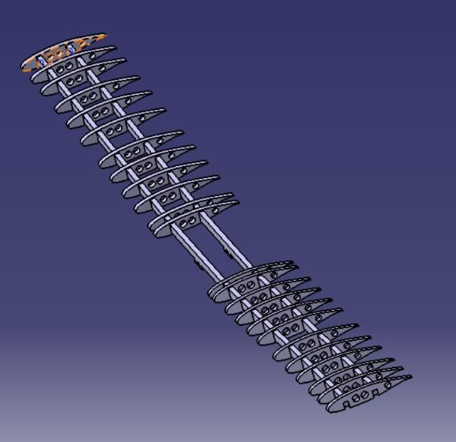
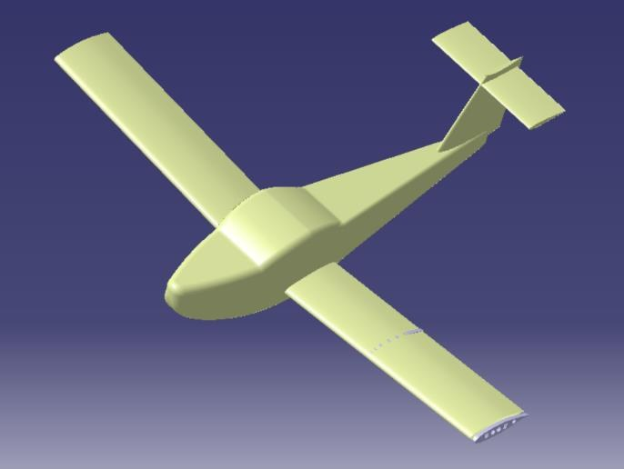
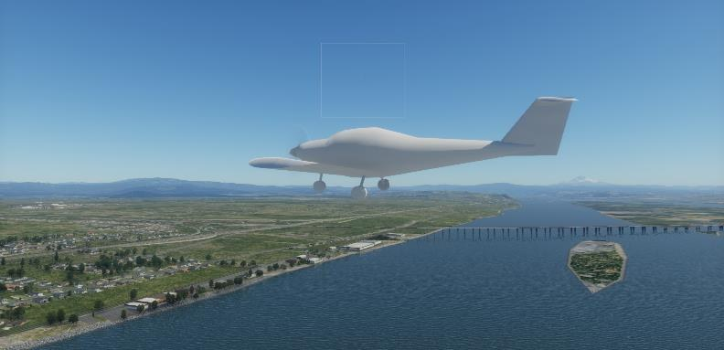
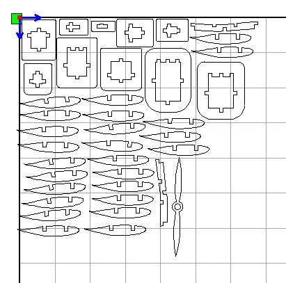
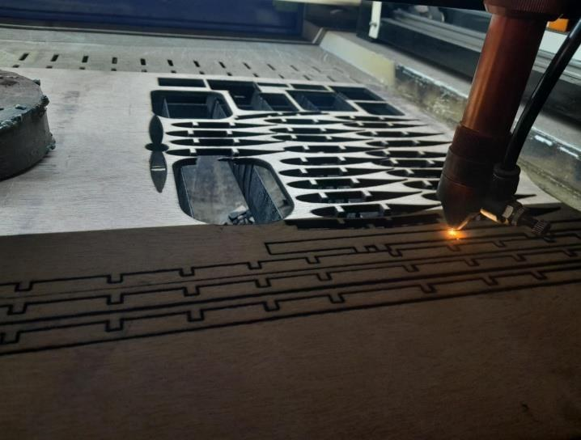

From drawing to airframe.
A 1:14 scale Piper PA-38 Tomahawk model, designed, simulated and assembled from laser-cut plywood.
For our Aircraft Manufacturing course at IOE Pulchowk Campus, we worked through preliminary sizing, CAD, digital flight checks and hands-on fabrication.

Scaling the Tomahawk
A familiar aircraft, reduced to a buildable scale.
We started with the PA-38's dimensions and divided each linear measurement by 14. That produced a 74 cm wingspan, roughly 50 cm fuselage and 7.9 cm average chord. The wing's aspect ratio stays at 9.33 when scaled uniformly; the wing area becomes about 0.0589 m².
NASA GAW-1 airfoil selected for the design study, with about 5° dihedral proposed to improve roll stability.
At an assumed 400 g model mass, estimated wing loading was 6.79 kg/m². This was a design estimate, not a measured final weight.
The planned center of gravity was 25–30% of mean aerodynamic chord. The high-mounted T-tail needed a reinforced fuselage attachment.


Digital checks
Analysis guided the design before cutting.
The team used XFLR5 for early airfoil and aircraft analysis at relevant Reynolds numbers. A matching model in X-Plane was used to assess simulated flyability and examine phugoid, short-period, Dutch-roll, roll-damping and spiral responses.
The report describes a positive X-Plane flyability check. It does not document a physical flight test of the plywood model, so the simulation should not be read as proof that the finished model flew.


In the manufacturing lab
CAD files became cut parts, then an aircraft.
Parts were modeled in CATIA, exported as DXF files and prepared for the laser cutter in RDWorks. The team cut ribs, fuselage frames, longerons, tail parts, spars and a propeller in three batches at IOE Pulchowk's manufacturing lab. The plywood parts were sorted and joined with Vega glue.


04 / OUTCOME
A completed structural model and a practical lesson in making it.
The project ended with an assembled 1:14 plywood representation of the PA-38. The report records the digital analysis and fabrication sequence, including the judgement needed to identify, fit and join the cut parts. No measured flight performance is reported for the finished model.